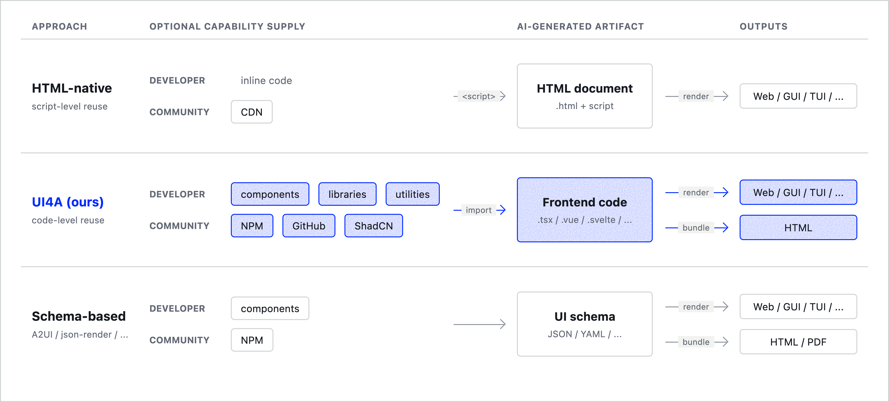
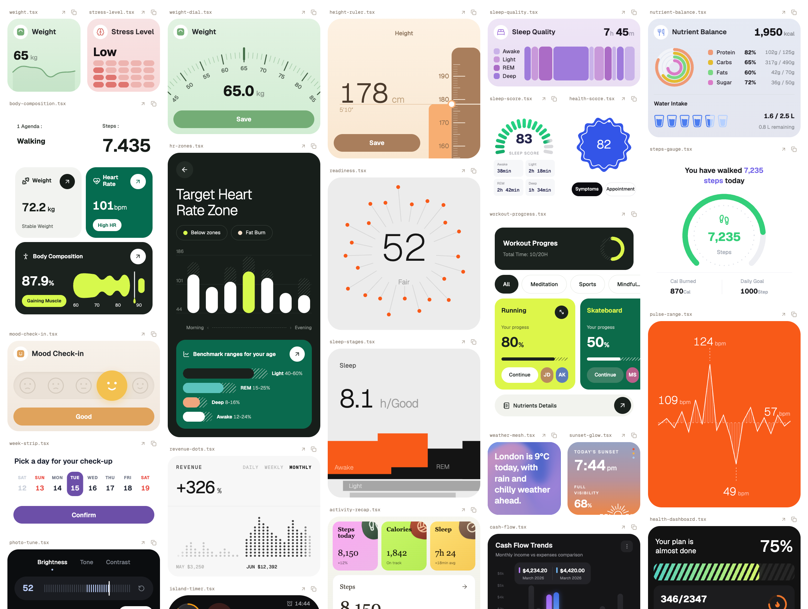
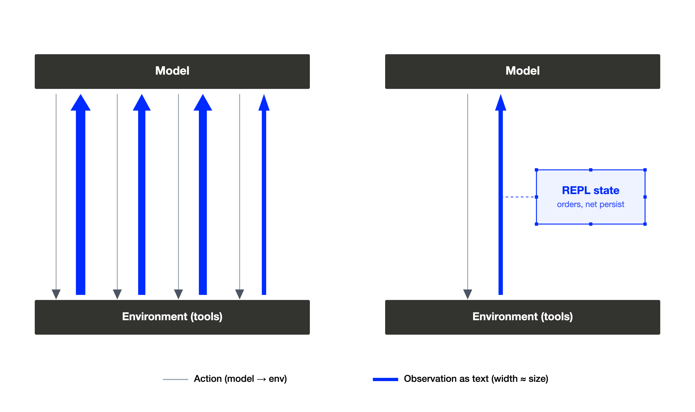
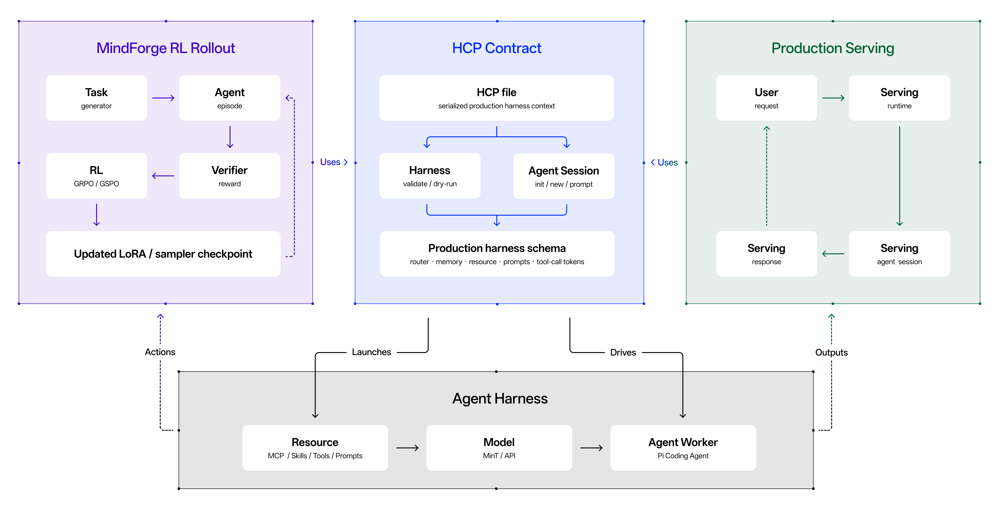
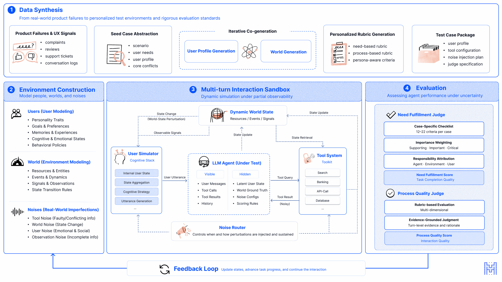
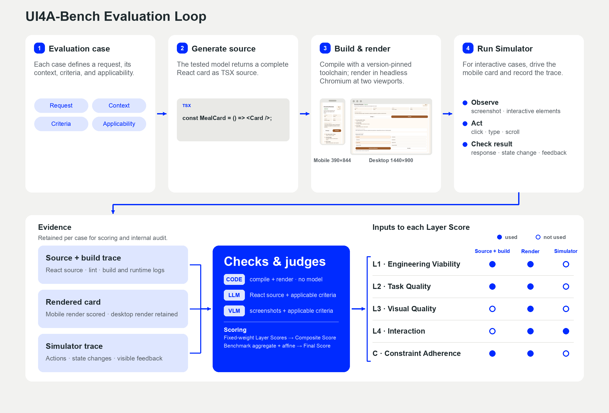
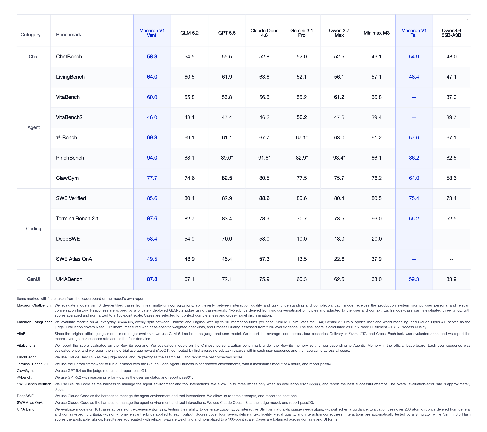
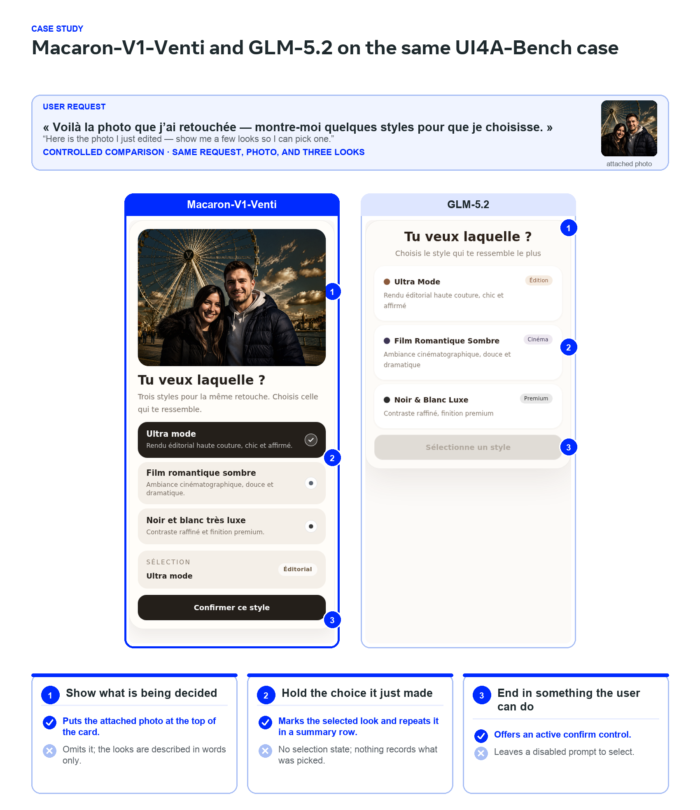

前沿模型的能力增长越来越来自后训练，但后训练的效果高度依赖模型所在的『环境』：训练、评测、部署的交互方式共同塑造了智能体需要的行为。当模型被训练在静态任务集合上、发布后就不再更新，这逼近的是『静态最优』，而非真正的智能。
Macaron-V1（Mind Lab）给出另一种组织方式：一个面向持续学习与集体智能的开放智能体模型家族，而不是单个单体checkpoint。它用递归自改进实现适应（Adaptation），用Mixture-of-LoRA实现协作（Collaboration），把『学习』做成模型与运行环境共同演进的闭环。
集中式后训练的典型做法是：在一组有界任务上优化模型、与当前harness对齐、固化成checkpoint发布。训练混合任务能提升整体表现，但异构目标通过共享参数竞争时会造成跨任务干扰；更根本的是，发布后新知识、新工具、新用户需求仍在不断到来，系统却停留在发布时的分布上。
Mind Lab把真正的智能定义为『体验式智能』（experiential intelligence）：从真实环境中积累的经验里学习，并在部署后持续学习。他们用『个人智能』（Personal Intelligence）指代智能体为特定用户长期工作所需的能力：可靠用工具、跨会话记住约束、判断何时提问何时行动、对用户诚实。这些是产品目标，而体验式智能在此基础上加了一个时间维度：部署经验要反哺到下一次模型：harness修订。
体验式智能有两条互补的维度，Macaron-V1围绕二者构建：适应（Adaptation）通过对版本化的模型：harness对做递归改进实现：一个配置产生的经验在外部契约下被评估，并用于构造它的后继版本；协作（Collaboration）通过组合实现：让专家保持可分离，避免共享参数里的跨任务干扰。
Macaron-V1是开放模型家族而非单一checkpoint。旗舰Venti由冻结的744B GLM-5.2基座加上四个LoRA专家组成，发布标签748B；Tall面向本地部署，基于Qwen3.6-35B-A3B（约50.1B），沿用同一四专家设计；Coding-Venti则把编码专家直接合并进基座而不是作为适配器服务。
两个用MoL服务的变体共享同一模式：冻结基座、少量LoRA专家、L0发出的路由标签、以及训练与服务都贴近生产的harness。四个专家分别是：L0 Chat（对话主干、指令跟随，兼作路由入口）、L1 Agent（长程工具使用，吸收Preview版的OpenClaw专家）、L2 Coding（代码生成与终端使用）、L3 GenUI（UI4A渲染与UI驱动操作，专精TSX）。
智能体工作负载的思维链模式差异很大：对话、智能体工具使用、编码、GenUI各自要模型以不同方式思考。联合后训练可能造成跨任务干扰，这促成一个让专业化显式化的架构。MoL用一条单一规则把这一取舍摆到台面上：把共享技能与思维模式的聚类成一个LoRA，把技能分歧明显的任务放在不同LoRA。
从这条规则自然推出两个支撑持续学习与集体智能的性质：基座冻结：新能力通过增训和注册另一个适配器获得，而不是重训基座，基座权重不会被后续专业化覆盖；适配器可移植：因为基座共享，一方训练或个性化得到的专家，能与另一方在同一运行时上组合。
MoL不训练独立的路由器模型：适配器选择由入口专家L0自身的推理决定，由MoL Proxy执行。普通用户请求走三阶段生命周期：路由（Route，L0在24-token预算内把请求分类到恰好一个规范适配器标签）、回答（Answer，所选专家从自己的对话视图出发作答）、摘要（Summary，专家输出上限192 token的简短短暂，由Proxy服务端存储，成为任何适配器后续回合可继承的共享上下文，绝不回传给客户端）。
路由不是免费的：每个用户回合在专家自身生成之外，都要加一跳专门路由和一跳摘要。实测中Venti的路由决策成本0.54s、摘要跳0.97s，合计1.51s、约占三跳总耗时的32%；Tall（Qwen3.6-35B-A3B）对应0.20s与0.32s。路由准确率在6448样本轨迹上：Venti达99.12%，Tall达99.04%，100% 规范标签合规、零解析错误，残差错误集中在L0/L1边界（通用对话vs个人智能体，语义最接近的两类）。
核心的服务期构造是『own-view』：对每次引擎跳，Proxy从仅追加的对话时间线确定性地重建目标LoRA看到的消息列表：每个专家保留自己过去回合的逐字轨迹（完整assistant trace、工具调用与结果），而把其他专家的过去回合折叠成一条带192-token摘要的assistant消息。专家因此看到自己的原始推理历史 + 他人动作的压缩记录，永远看不到其他专家的完整轨迹。
own-view是路由便宜的来源：时间线仅追加、每次重建确定，重入某LoRA时产生逐字节一致的前缀，命中引擎原生的LoRA感知前缀缓存，只需预填充新增的尾部。KV复用因此是稳定每适配器提示的涌现属性，无需改引擎。KV复用分两层：生产路径靠稳定的own-view涌现复用（vLLM/SGLang零改动）；实验性的同请求route-decode覆盖层在L0预填充路由提示后沿用共享前缀继续解码。两者都只复用连续前缀，默认部署走涌现路径。
LLM智能体输出文本，而harness把这些文本变成动作：用户看到的一切、存在什么工具、UI如何渲染、工具结果如何喂回模型，都在这一层。Macaron把harness当作一等训练对象：一个脆弱的、承载模型的schema是天花板，而能表达普通程序员编写的代码的harness，能让通用模型完成大部分工作。

生成式UI历来用两种有天花板的方式：最大表达力最小可控（继承原始web开发所有编译器/打包器/错误恢复问题）、可验证schema但限制表达。UI4A走第三条路：组件原生（component-native）：让模型在运行时强制的边界内编写普通前端代码，恢复表达力而不受schema天花板限制。gallery的每张卡片都是作为运行时边界约束下的普通前端代码生成，UI4A-Bench按编译/渲染正确性、控制接线、屏幕适配来计分。

REPL型智能体harness把『可执行组合』与『验证复用』当作模型与其工具之间的接口：模型可以组合可执行片段而非仅发文本，既保留表达力又可通过实际执行验证结果。Harness Context Protocol（HCP）则让运行期选择、工具、技能、提示、钩子、会话与工作区资源可移植、可审计，把一次运行期的『配方』标准化下来。
agentic RL框架MindForge对harness跑三阶段循环：任务发现、轨迹扩展、关联的模型/配置更新。本报告固定的实验只隔离了扩展阶段：模型保持冻结、无优化器步骤：自适应搜索在122个基座失败任务上累计覆盖达到122/122，而更强的一次全集合单配置扫描只到11/122。

MindForge的三阶段循环共享同一个harness。递归自改进（RSI）在一个有界且可审计的意义上使用：一个版本化模型：harness配置产生的经验，在外部契约下被评估，并用于构造后继修订。跨多个代际反复进行：同时改进专家、路由策略与harness配置而保留既有能力：是更长期的持续学习目标。

持续学习的前沿要求模型状态侧也有配套。MinT后训练平台管理冻结基座上的LoRA-RL，关键区分在于不可变的LoRA快照（在某一训练步按服务张量布局导出）与版本化适配器修订之间的交接；它提供百万级可寻址目录与万亿级参数类的模型并行路径。
LongStraw是架构感知、仅响应的长上下文执行栈，在固定GPU库存下给出数万亿token的操作点；稀疏基座（MoE / DSA）上用R3 rollout路由回放、DSA集成修复与IcePop式token掩码应对rollout：learner失配。
与标准正确性基准不同，个性化体验的质量判断依赖用户身份、交互场景与状态的联合上下文。这让评估出现两个挑战：对话内体验质量分散在细微差别里，同一行为对不同用户含义不同。Macaron引入两个评估交互轨迹而非孤立答案的基准：ChatBench评估上下文条件下的智能体对话，LivingBench在演变条件下评估有状态的模拟个人生活助理。

UI4A-Bench的每个用例把请求与相关用户上下文组织成前后端共同的评估循环，衡量生成式UI在编译/渲染正确性、控制接线与屏幕适配上的表现。

Macaron-V1在个人智能、智能体、编码与GenUI四条线评估，对比Opus 4.8、GPT-5.5、Gemini 3.1 Pro、GLM-5.2、Qwen 3.7 Max与Minimax M3六个模型。每条基线的评测遵循附录规定的各自协议。

在个人智能上，Venti在ChatBench记录58.3（比GPT-5.5高2.8分），在LivingBench记录64.0（比Opus 4.8高0.2分）；两行的用例、评判栈、采样策略与聚合规则对所有模型一致。内部个人智能结果视为同分布证据，而非通用能力比较。

智能体组包含VitaBench、VitaBench2、tau3-Bench、PinchBench与ClawGym；编码组包含SWE-Verified、DeepSWE与SWE Atlas QnA；另含TerminalBench 2.1终端操作与GenUI轨迹评测。Tall在多数同条带基准上与Venti拉开较小差距，并在多模态点估计上有自己的分数。

Macaron-V1是围绕持续学习与集体智能而非单体checkpoint组织的智能体模型家族首次发布。架构主干是Mixture-of-LoRA：冻结基座 + 一组专家，两个系统目标分别由递归改进（适应）与适配器组合（协作）承载。
它的诚实之处在于指出现实边界：适配与协作是持续演进的智能体系统的互补维度：协作决定不同能力如何被表示、选择与组合，适应决定这些能力与周围harness如何随经验改变。跨多代推广（专家、路由策略与harness配置共同改进而保留既有能力）以及独立训练专家带来真正集体智能增益，仍是开放研究方向。
参考：https://arxiv.org/pdf/2608.09819